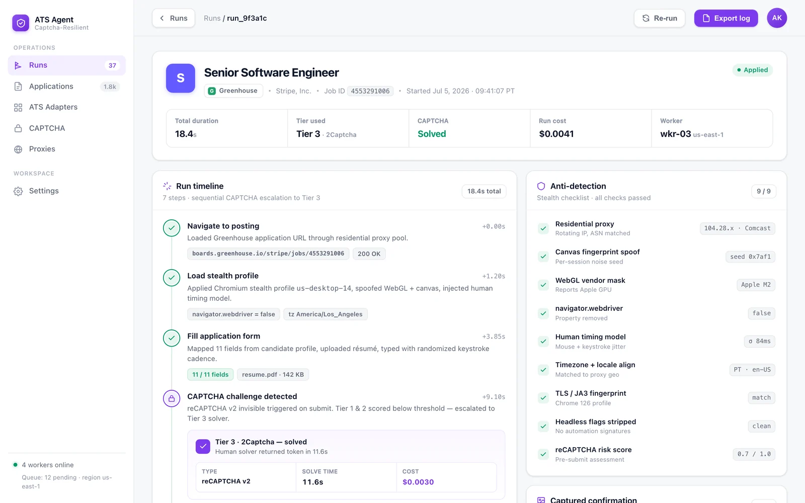

Multi-ATS · CAPTCHA-resilient
Auto-apply that doesn't stop at the CAPTCHA.
An AI job-application agent that applies across Lever, Greenhouse and Workday — and gets past the wall with a 5-tier bypass stack that escalates only as far as it has to.
Stealth Chromium · fingerprint masking · 150+ anti-detection scripts
The 5-tier bypass stack
Escalation by design, not brute force.
Every application starts cheap and quiet. If a CAPTCHA blocks the run, the agent steps up one tier at a time — cheapest and stealthiest first, guaranteed last. You pay for the hard solves, never the easy ones.
How a run works
Four steps, one clean submit.
Under the hood is an abstract base adapter with smart form-filling, error classification and screenshot capture — so every ATS run follows the same shape and every failure is legible.
Navigate
Opens the posting on Lever, Greenhouse or Workday and resolves the right adapter for the ATS.
Fill
Smart form-filling maps profile data to fields, with random delays and natural typing patterns.
Solve
If a CAPTCHA appears, the bypass stack escalates tier by tier until the challenge clears.
Submit
Confirms the submission, captures a screenshot for the record, and logs the outcome.
Built to look human
Runs that get through because they don't look automated.
Detection is the real adversary. Before a single tier escalates, the agent is already blending in — spoofing the runtime, masking fingerprints and moving like a person.
Stealth Chromium runtime
Hardened Chromium with Chrome-runtime spoofing, so the browser reports itself as an ordinary Chrome session.
chrome.runtime spoofedFingerprint masking
WebGL and Canvas fingerprints are masked so the run can't be tied to a repeatable automation signature.
WebGL · Canvas150+ anti-detection scripts
A library of patches removes the tell-tale automation flags that headless browsers usually leak.
150+ scriptsHuman-behavior simulation
Random delays, natural mouse movements and realistic typing patterns make each run pace like a person.
delays · mouse · typingInside the product
See what actually ran.
Every run is fully traced — a board of outcomes by CAPTCHA tier, and a step-by-step timeline for any single application.

Success by tier, across every ATS
Watch which applications cleared on stealth Chromium, which escalated to a paid solver, and how each platform is performing — all in one board.

The full timeline of a single apply
Navigate, fill, solve, submit — each step timestamped, the tier that cleared the CAPTCHA recorded, and a screenshot captured as proof of submission.
Under the hood
Built on tooling that scrapers respect.
Talk to us
Put an agent on the applications that keep bouncing.
Tell us which ATS platforms you're targeting and where the CAPTCHAs are stopping you. We'll show you the stack running on a real posting.